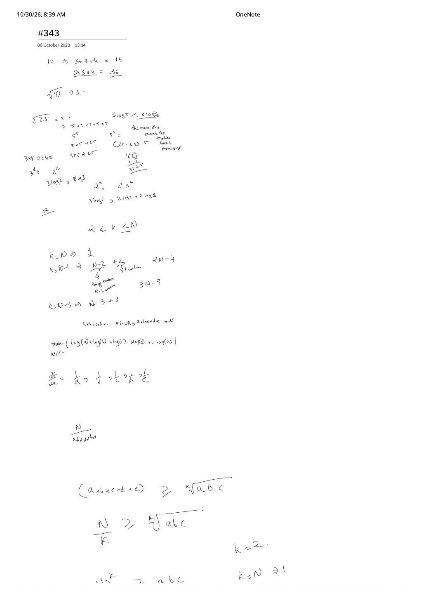
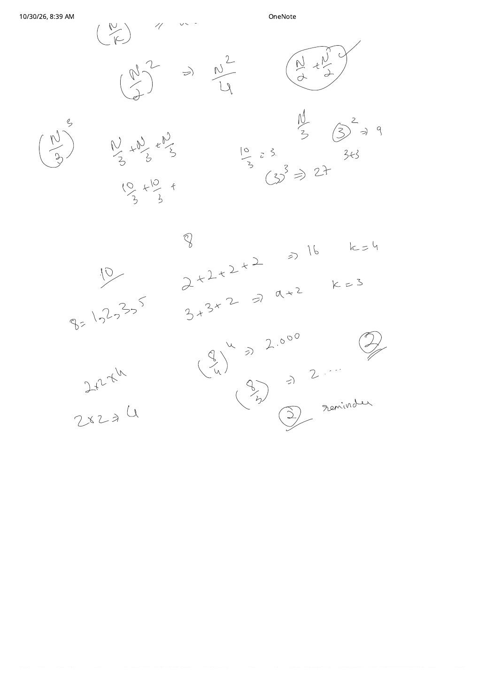

LC 343: Integer Break — Full AM-GM Proof, Factor-of-3 Rule & Partition DP
Expanded from handwritten competitive coding study note: 04_343.pdf (2 pages)
1. Problem Statement & Constraints
Given an integer $N$ ($2 \le N \le 58$), break $N$ into the sum of at least two positive integers ($N = a_1 + a_2 + \dots + a_k$ with $k \ge 2$ and $a_i \in \mathbb{Z}^+$) so as to maximize their product $P = a_1 \cdot a_2 \cdots a_k$. Return the maximum product.
- Example 1: $N = 2 \implies 1 + 1 = 2 \implies 1 \times 1 = \mathbf{1}$ (since $k \ge 2$ is mandatory!).
- Example 2: $N = 10 \implies 3 + 3 + 4 = 10 \implies 3 \times 3 \times 4 = \mathbf{36}$ (top of Page 1 in
04_343.pdf).
2. Handwritten Mathematical Proof: Why Splitting Into $3$s Wins
Instead of memorizing "keep subtracting $3$", Pages 1 and 2 of 04_343.pdf derive the rule from first principles using logarithms, partial derivatives, and the AM–GM inequality:
Step 1 (Page 1): Equal Parts Maximize the Product for Any Fixed $k$
Maximizing $P = \prod_{i=1}^{k} a_i$ is equivalent to maximizing $\ln P = \sum_{i=1}^{k} \ln(a_i)$ subject to $\sum_{i=1}^{k} a_i = N$. By symmetry of the partial derivatives $\frac{\partial}{\partial a_i}\ln a_i = \frac{1}{a_i}$ (or directly via AM–GM):
Equality holds when all $k$ summands are equal to $x = N / k$. Notice the extreme $k$-checks written on Page 1: $k = N$ gives $(1)^N = 1$, $k = N - 1$ gives $1^{N-2} \cdot 2 = 2$, whereas intermediate $k$ shoots up exponentially!
Step 2 (Pages 1 & 2): What Part Size $x = N / k$ Maximizes $f(x) = x^{N/x}$?
Differentiating $\ln f(x) = \frac{N}{x}\ln x$ with respect to $x \gt 0$:
$$\frac{d}{dx}\left(\frac{N \ln x}{x}\right) = \frac{N(1 - \ln x)}{x^2} = 0 \implies \ln x = 1 \implies x = e \approx 2.71828$$Since $a_i$ must be integers, we compare the two integers bracketing $e$ ($x = 2$ vs. $x = 3$) via $\frac{\ln x}{x}$—matching the exact log comparisons written on Page 1 of 04_343.pdf:
- Sum $= 24$ ($3 \times 8 = 2 \times 12$): $8 \ln 3 \approx 8.789 \gt 12 \ln 2 \approx 8.318$, i.e. $3^8 = \mathbf{6561} \gt 2^{12} = 4096$ (and for $N = 25$, $5^5 = 3125 \lt 3^7 \cdot 4 = 8748$).
- Sum $= 10$: $2^2 \cdot 3^2 = \mathbf{36}$ ($2\ln 2 + 2\ln 3$) beats $2^5 = 32$ ($5\ln 2$).
- Sum $= 8$ (Page 2 bottom): $3 + 3 + 2 \implies 3 \times 3 \times 2 = \mathbf{18}$ ($k = 3$) beats $2 + 2 + 2 + 2 \implies 2^4 = 16$ ($k = 4$).
Moreover, no optimal split ever needs a part $a_i \ge 4$: replacing $a_i$ with $2 + (a_i - 2)$ gives $2(a_i - 2) = 2a_i - 4 \ge a_i$ for every $a_i \ge 4$ ($4 \to 2 \times 2 = 4$, $5 \to 2 \times 3 = 6 \gt 5$, $6 \to 3 \times 3 = 9 \gt 6$). Thus every optimal partition for $N \ge 4$ uses only $2$s and $3$s, with at most two $2$s (since $2 + 2 + 2 = 6$ upgrades from $2^3 = 8$ to $3^2 = 9$!).
3. The Complete Remainder-Mod-3 Decision Rule
| Case | Condition | Optimal Partition | Closed-Form Product | Example |
|---|---|---|---|---|
| Mandatory Split Base | $N = 2$ | $1 + 1$ | $1$ | $N = 2 \to 1$ |
| Mandatory Split Base | $N = 3$ | $2 + 1$ | $2$ | $N = 3 \to 2$ |
| $N \equiv 0 \pmod 3$ | $N = 3q$ ($q \ge 2$) | $\underbrace{3 + 3 + \dots + 3}_{q}$ | $3^q$ | $N = 9 \to 3^3 = 27$ |
| $N \equiv 1 \pmod 3$ | $N = 3q + 1$ ($q \ge 1$) | $\underbrace{3 + \dots + 3}_{q - 1} + 2 + 2$ | $3^{q - 1} \times 4$ | $N = 10 \to 3^2 \times 4 = 36$ |
| $N \equiv 2 \pmod 3$ | $N = 3q + 2$ ($q \ge 1$) | $\underbrace{3 + \dots + 3}_{q} + 2$ | $3^q \times 2$ | $N = 8 \to 3^2 \times 2 = 18$ |
4. Progression: $\mathcal{O}(N^2)$ Partition DP vs. $\mathcal{O}(\log N)$ Math
Even if you don't spot the AM–GM proof under contest pressure, $N \le 58$ makes 1D Dynamic Programming effortless—provided you watch out for one classic DP trap:
The Partition DP Base-Case Trap: max(i - j, dp[i - j])
Remember that $\text{dp}[2] = 1 < 2$ and $\text{dp}[3] = 2 < 3$ because the top-level number must be split into $k \ge 2$ parts! However, once we peel off a first summand $j \in [1, i - 1]$ from $i$, the remainder $i - j$ already counts as a second part—we are allowed to keep $(i - j)$ whole without splitting it further! Hence the transition MUST be:
// LC 343: Integer Break — Both Optimal Math O(log N) and 1D DP O(N^2)
#include <algorithm>
#include <vector>
using namespace std;
class Solution {
long long fastPow3(int exp) {
long long res = 1, base = 3;
while (exp > 0) {
if (exp & 1) res *= base;
base *= base;
exp >>= 1;
}
return res;
}
public:
// Optimal Mathematical Solution: O(log N) Time (O(1) for N <= 58), O(1) Space
int integerBreak(int n) {
if (n == 2) return 1; // 1 + 1
if (n == 3) return 2; // 2 + 1
int q = n / 3, r = n % 3;
if (r == 0) return (int)fastPow3(q);
if (r == 1) return (int)(fastPow3(q - 1) * 4); // Borrow one 3: 3 + 1 -> 2 * 2 = 4
return (int)(fastPow3(q) * 2); // r == 2
}
// Alternative 1D Dynamic Programming Solution: O(N^2) Time, O(N) Space
int integerBreakDP(int n) {
vector<int> dp(n + 1, 0);
dp[1] = 1;
for (int i = 2; i <= n; ++i) {
for (int j = 1; j <= i / 2; ++j) {
dp[i] = max(dp[i], j * max(i - j, dp[i - j]));
}
}
return dp[n];
}
};class Solution:
def integerBreak(self, n: int) -> int:
if n <= 3:
return n - 1
q, r = divmod(n, 3)
if r == 0:
return 3 ** q
if r == 1:
return (3 ** (q - 1)) * 4
return (3 ** q) * 25. Complexity Proof & Key Edge Cases
- Time Complexity: $\mathcal{O}(\log N)$ using integer binary exponentiation (effectively $\mathcal{O}(1)$ since $N \le 58 \implies q \le 19$), or $\mathcal{O}(N^2)$ for 1D DP.
- Space Complexity: $\mathcal{O}(1)$ for the mathematical solution; $\mathcal{O}(N)$ for 1D DP.
- Key Edge Cases:
- $N = 2$ and $N = 3$: The only values where splitting strictly decreases $N$ ($N \to N - 1$). Always guard
if (n <= 3) return n - 1;before applying modulo-3 rules! - $N = 4$: $q = 1, r = 1 \implies 3^0 \times 4 = 4$ ($2 + 2 \implies 2 \times 2 = 4$), handled seamlessly by the $r = 1$ branch.
- 32-Bit Signed Bound at Maximum $N = 58$: $58 = 3 \times 19 + 1 \implies 3^{18} \times 4 = 387{,}420{,}489 \times 4 = 1{,}549{,}681{,}956 \lt 2^{31} - 1$, fitting cleanly inside 32-bit signed
int!
- $N = 2$ and $N = 3$: The only values where splitting strictly decreases $N$ ($N \to N - 1$). Always guard
From the Handwritten Notes
View original handwritten page 1 — 04_343.pdf (N = 10 & N = 25 experiments, log derivatives & AM-GM bound)


04_343.pdf Page 1: Testing $10 \to 3 \times 3 \times 4 = 36$, comparing $12 \log 2$ vs. $8 \log 3$, differentiating $\sum \log(a_i)$, and deriving $\frac{N}{k} \ge \sqrt[k]{abc}$.View original handwritten page 2 — 04_343.pdf ((N/k)^k comparisons & remainder-mod-3 check on N = 8)


04_343.pdf Page 2: Comparing $(N/2)^2$ vs. $(N/3)^3$ and testing $N = 8$: $3 + 3 + 2 \to 18$ ($k=3$) vs. $2 + 2 + 2 + 2 \to 16$ ($k=4$).